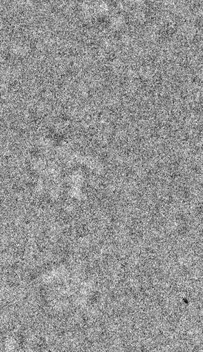

| .OPERATION: | RT 90 | ; Rotate image/volume |
| .INPUT FILE: | sav_mic_win | ; File name (input) |
| .OUTPUT FILE: | rt90 | ; Rotated file name (output) |
| FIRST AND LAST X COLUMN NUMBER (OR <CR> FOR ALL): | <CR> | ; <CR> = all columns |
| FIRST AND LAST X ROW NUMBER (OR <CR> FOR ALL): | <CR> | ; <CR> = all rows |
| FIRST AND LAST Z SLICE NUMBER (OR <CR> FOR ALL): | <CR> | ; <CR> = all slices |
| .ROTATION AXIS (X,Y,Z): | Z | ; Around Z axis |
| .ROTATION ANGLE (90,180, OR 270): | 90 | ; Angle of rotation = 90 degrees |
| INPUT IMAGE | OUTPUT IMAGE |
|---|---|
|  | |
| sav_mic_win | rt90 |